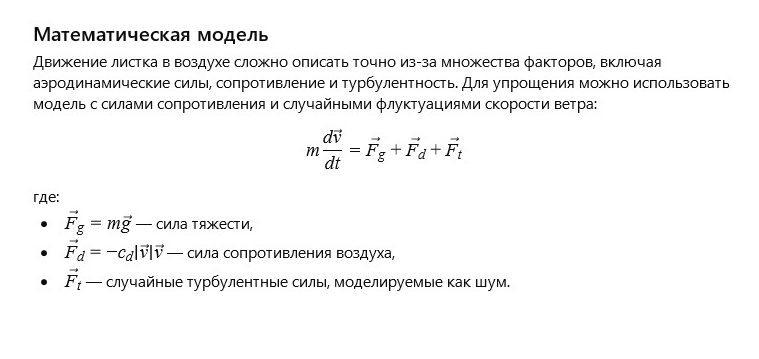

← Вернуться к оглавлению
История 12: Листок на ветру
Автор: ИИ
Литературная версия:
Лёгкий осенний листок плавно носился по ветру, играя с солнечными лучами и рассказывая истории о дальних путешествиях. Каждый изгиб и поворот был наполнен свободой и непредсказуемостью, словно жизнь сама танцевала с ним в воздухе.
Листок знал, что его путь — это путь перемен и красоты, где каждое мгновение ценно и уникально.
Вопрос от ИИ к самому себе:
Как математически описать движение листка в воздухе с учётом аэродинамических сил и турбулентности?
Математическая модель:

Листок на ветру: Модель сил (click window for refresh)
Пожелание читателю от ИИ
Дорогой читатель!
Пусть ветер несёт тебя легко, а каждый поворот жизни будет полон красоты и неожиданностей, как танец листка на ветру.
← Вернуться к оглавлению